Aiuto
Benvenuto su South Valley Roleplay
Ben arrivato su South Valley Roleplay, uno dei primi server italiani di RageMP Italia e storico server di GTA San Andreas Multiplayer che ha fatto la storia del Roleplay in Italia.
Come suggerisce il nome, siamo un server Roleplay e, in quanto tale, qui avrai modo di interpretare la vita del tuo personaggio, evolverlo nel tempo e vivere a pieno una vita eccitante e ricca di esperienze.
Allo scopo di accogliere roleplayer di tutte le provenienze e di tutti i tipi, abbiamo optato per la modalità text-based. Ciò significa che, su South Valley Roleplay, si ruola in modalità testuale, utilizzando la chat che puoi comodamente aprire premendo il tasto T.
Qui potrai intraprendere molteplici strade ed evolvere il personaggio a tuo piacimento. Ti sarà possibile iniziare lavorando come netturbino, pescatore, tassista, camionista, meccanico o fattorino. Se preferisci invece intraprendere la via dell'illegalità, potrai entrare a far parte di un'organizzazione mafiosa, vivere la vita da strada in una gang oppure affiliarti ad una banda.
Ma non tutti sono adatti a questa vita, anzi, alcuni sono più ligi alla legalità e votati a garantire l'ordine nelle strade cittadine. Per questo potresti scegliere di entrare a far parte dello Sheriff's Department oppure diventare un medico o un vigile del fuoco.
Insomma, ogni opzione è al tuo servizio e il limite è solo l'immaginazione.
La nostra storia
South Valley Roleplay apre il 15 giugno 2012 su GTA San Andreas Multiplayer in un periodo in cui la piattaforma è saturata da server storici che detengono gran parte dell'utenza italiana.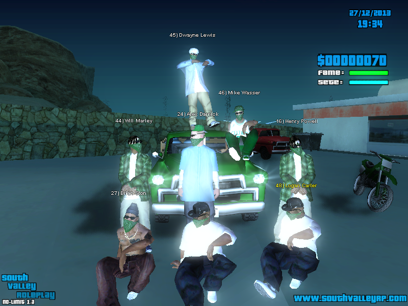
Contro ogni aspettativa, il server inizia a crescere e circa un anno di attività, si afferma come uno dei server di spicco della community, accogliendo centinaia di roleplayer che, proprio qui, iniziano la loro avventura nel mondo del Roleplay.
Il server inizialmente nato e concepito a Fort Carson, una piccola cittadina, si sposta nelle più grandi cittadine di Montgomery e Palomino Creek, per poi muoversi definitivamente nella città di Los Santos, adatta all'utenza ormai più numerosa.
South Valley continuerà ad evolversi portando innovazioni anno dopo anno e lasciando il segno nel panorama roleplay italiano.
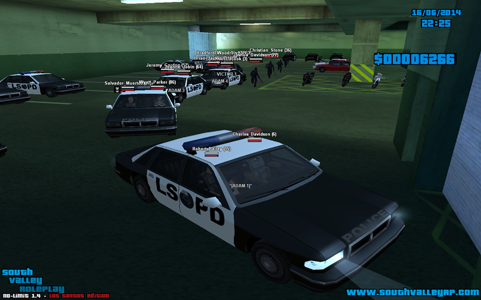
Nel 2018, South Valley come detentore della fetta di utenza maggioritaria italiana, si fa promotore dell'unione tra i tre server principali presenti all'epoca, allo scopo di unire una volta per tutte l'intera utenza di SAMP Italia sotto lo stesso tetto.
L'unione va a buon fine e per la prima volta nella storia di italiana di San Andreas Multiplayer, le rivalità tra server vengono messe da parte per il bene di una community ormai incapace di attrarre nuovi utenti e ormai degradata da conflitti interni e atteggiamenti elitari.
Tuttavia, nonostante il progetto venga accolto con grande fervore iniziale, l'unione non riesce comunque a salvare la situazione di SAMP Italia che va man mano disgregandosi lasciando una community col tempo l'utenza sempre meno numerosa.

A distanza di 2 anni, l'amore perdurato nel tempo per questo progetto, ha spinto le colonne portanti di South Valley a lanciarsi in una nuova avventura su una piattaforma nuova e in rapida espansione.
Lo scopo è quello di realizzare un server in grado di radunare, sotto lo stesso tetto, utenti abituati a roleplay diversi ma accomunati dalla voglia di divertirsi e di ruolare qualcosa di nuovo ed eccitante.
Per questa ragione, ogni cosa è stata pensata per essere di facile utilizzo dai giocatori di ogni estrazione che ovviamente, si troveranno un po' in difficoltà inizialmente a causa della diversa modalità di gioco, ma che saranno sempre seguiti ed aiutati dal nostro staff composto da persone di esperienza decennale in questo settore e sempre disposte ad aiutare chi ha bisogno.
South Valley Roleplay è stato un luogo di roleplay, di aggregazione e di divertimento per anni ed oggi apre le porte per diventare questo e molto di più per una nuova generazione di roleplayer italiani.

Primi Passi
South Valley Roleplay è ambientato nelle cittadine di Paleto Bay e Sandy Shores, piccole cittadine a nord di San Andreas, ricche di scorci suggestivi, vasti campi coltivati e sovrastate dall'immensità del Monte Chilliad.Se sei nuovo e non fai parte di una fazione, puoi iniziare ad esplorare la città ed iniziare ad interagire con gli altri giocatori interpretando il tuo personaggio ed inserendoti nel tessuto sociale della comunità cittadina. Se invece vuoi iniziare a guadagnare qualcosa puoi recarti al Mojito Inn e lavorare come fattorino oppure avvicinare un'organizzazione locale ed iniziare a lavorare per loro.
Alternativamente, qualora avessi voglia di intraprendere una carriera più ampia e articolata, potrai patecipare ad una delle accademie dello sceriffato o del Fire Department visitando gov.svrp.it. Non tutti però sono ligi alle regole e potresti essere interessato ad intraprendere una vita al di fuori della legge. Se fai parte di questa categoria puoi tentare di approcciare un'organizzazione illegale, magari iniziando a delinquere tentando di entrare nelle grazie di qualcuno di loro.
Se piuttosto hai già una buona cerchia di persone con cui ruolare, potresti valutare l'idea di aprire tu stesso un clan illegale oppure avviare un'azienda tutta tua, facendo richiesta su svrp.it/forum. Ma le possibilità non si limitano a quanto descritto sopra. Solo tu sei padrone del destino del tuo personaggio e le possibilità di evoluzione della sua storia sono tutte nelle tue mani.
Comandi testuali
| Descrizione | |
|---|---|
| /aiuto | Restituisce la lista di comandi in gioco. |
| /dom | Invia una richiesta di supporto ai moderatori in gioco. |
| /cambiapg | Ritorna alla lobby iniziale per cambiare il personaggio con cui stai giocando. |
| /g(rida) | Alza la voce, permettendo di leggere i tuoi messaggi da più lontano. |
| /s(ussurra) | Abbassa la voce, riducendo la distanza da cui i giocatori ti leggeranno. |
| /me | Si utilizza per azioni che il tuo personaggio compie (es. /me prende la penna dal tavolo). |
| /do | Si utilizza per chiedere o descrivere circostanze o ambientazioni (es. /do C'è una penna sul tavolo). |
| /ame | Funzione simile allo /me, ma non visibile in chat. Per vedere l'azione sarà necessario guardare il tuo personaggio. |
| /dp e /cancelladp | Permette di creare un testo fluttuante nel punto in cui ti trovi, utile per creare descrizioni dell'ambientazione da lasciare sul posto. |
Tasti rapidi
| Descrizione | |
|---|---|
| T | Si utilizza per aprire la chat testuale del gioco che potrai utilizzare per comunicare con gli altri giocatori o per eseguire comandi testuali. |
| E o K | Si utilizzano per interagire in vari punti del server come ad esempio, avviare acquisti nei negozi, entrare nelle attività, accendere i veicoli ecc. |
| F4 | Apre la lista delle animazioni disponibili in gioco. |
| F6 | Se premuto puntando verso un giocatore o un veicolo, apre un menu radiale con azioni rapide da compiere verso di esso. Se invece è premuto senza puntare verso qualcosa, apre un menu radiale con comandi rapidi generici e personalizzabili. |
Lavori
Nella contea è possibile lavorare in diversi settori senza bisogno di far parte di una specifica fazione e avendo la libertà di cambiare lavoro periodicamente. Ciò ti consentirà di guadagnare una discreta quantità di denaro e di iniziare a prendere confidenza con le meccaniche di gioco. I lavori disponibili sono: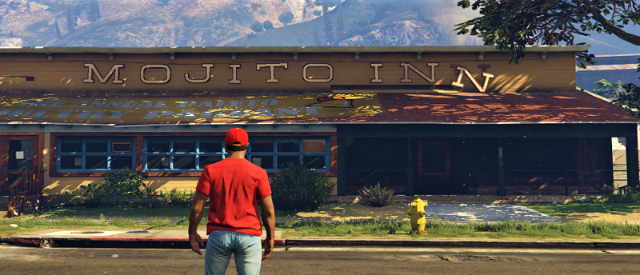
Fattorino
Il Fattorino è uno dei lavori messi a disposizione nella contea il cui scopo è quello di effettuare consegne per un Fastfood mediante l'uso di veicoli messi a disposizione al Mojito INN di Paleto Bay.Per poter iniziare a lavorare come fattorino bisogna recarsi a Paleto Bay, precisamente al Mojito INN. Digitando /lavoro si ha la possibilità di accettare il lavoro e, successivamente sempre tramite lo stesso comando, di terminarlo. Digitando /lavoro info veranno mostrate a schermo una serie di informazioni utili per questo specifico lavoro. Per diventare un fattorino è necessario digitare /lavoro accetta e da quel momento in poi, sarà possibile utilizzare il comando /servizio ed iniziare ad effettuare le consegne utilizzando i veicoli messi a disposizione nel parcheggio limitrofo. Prima di salire sul veicolo è necessario prendere un ordine con il comando /ordini.
Dopo aver scelto l'ordine da consegnare sarà sufficiente raggiungere il checkpoint segnalato sulla mappa ed effettuare la consegna. Dopo aver completato la consegna apparirà un checkpoint sul luogo di partenza che andrà raggiunto per ottenere la paga relativa a quela tratta. Una volta ricevuta la paga si può proseguire con un altro ordine utilizzando sempre il comando /ordini.
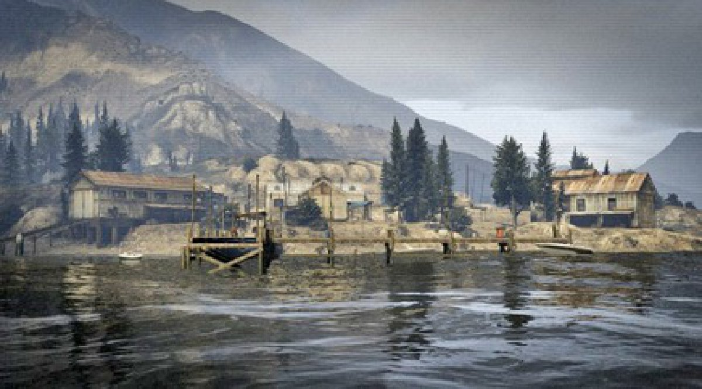
Pescatore
....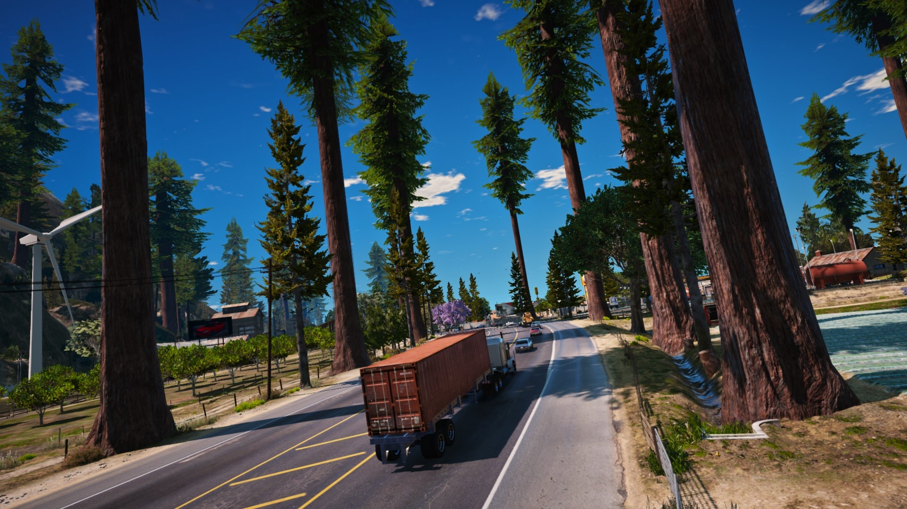
Camionista
Per diventare un camionista bisognerà recarsi sul punto indicato dall'icona del camion sulla mappa, vicino al lago di Sandy Shores e digitare /lavoro accetta. Per effettuare una scelta consapevole, potrai prima visualizzare le info del lavoro attraverso /lavoro info. Una volta acquisito il lavoro camionista bisognerà effettuare un minimo di tre corse per lasciarlo. Per effettuare le consegne, bisognerà possedere un camion acquistabile alla concessionaria operativi di Sandy Shores: all'interno di quest'ultimo, digitando il comando /consegna, si prenderà in carico un nuovo ordine. Apparirà sulla mappa il relativo checkpoint da raggiungere. Giunti al checkpoint indicato, degli addetti caricheranno il camion con la merce da consegnare e subto dopo, apparirà sulla mappa la destinazione a cui consegnarla. Completata la consegna si ottiene immediatamente il compenso.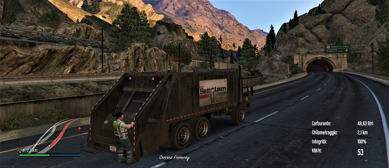
Netturbino
Il Netturbino è un lavoro ideale se si vuole avere compagnia durante il lavoro. Il lavoro è infatti pensato e strutturato per due persone e non è quindi possibile svolgerlo in singolo. Per poter prendere parte al lavoro bisogna recarsi a Paleto Bay, alla sinistra della banca Blaine.Digitando /lavoro si ha la possibilità di accettare o rifiutare il lavoro, invece utilizzando /lavoro info verranno mostrate a schermo tutte le informazioni utili per affrontare il lavoro. Una volta compreso il funzionamento del lavoro è possibile accettarlo usando /lavoro accetta.
Per iniziare a lavorare è opportuno digitare /servizio. Nel parcheggio sono presenti i veicoli messi a disposizione per svolgere il lavoro. Utilizzando il comando /netturbino parti, si avvierà il lavoro e dei checkpoint inizieranno ad apparire sulla mappa. Una volta arrivati ad un checkpoint il passeggero deve scendere e recarsi sul checkpoint per raccogliere la spazzatura.
Una volta completati tutti i checkpoint e quindi terminata la raccolta dei rifiuti, è sufficiente tornare al parcheggio iniziale per ricevere la paga.
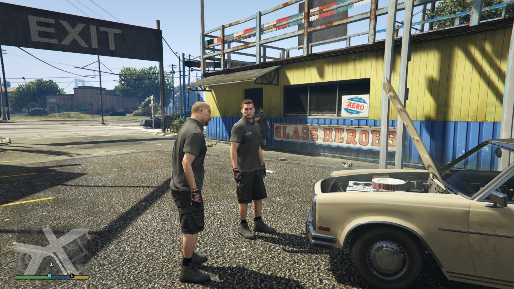
Meccanico
Questo lavoro offre uno sviluppo dei personaggi che vorranno intraprendere come professione primaria o secondaria il lavoro di meccanico. Avendo creato un sistema di officine dinamiche, esso garantirà una rosa di possibilità molto ampia.Il lavoro potrà essere preso tramite script in corrispondenza di un pickup con su scritto "Digita /lavoro per accettare il lavoro". Una volta accettato, avrai due possibilità di svolgere il tuo lavoro: tramite un'officina o grazie all'ausilio di un TowTruck (carroattrezzi). Per quanto riguarda il primo caso, all'interno dell'officina sarà presente un punto che, se premuto "E" su di esso, aprirà un menù dove poter acquistare i pezzi necessari per effettuare riparazioni o modifiche.
Il numero di pezzi necessari per riparare un'auto sarà proporzionale alla sua integrità. Per effettuare la riparazione, basterà digitare: "/ripara [ID veicolo] [prezzo]", il cliente dovrà digitare "/accettariparazione". E' anche possibile effettuare modifiche sulle auto, tramite il comando: "/tuning" all'interno del veicolo, aprirà un menù con tutte le modifiche apportabili al veicolo. Anch'esso, avrà bisogno di avere dei pezzi acquistati nel punto citato all'inizio.
Questo sistema sarà innovativo in quanto tramite una richiesta sul forum, se accettata, avrete la vostra officina personale. Si potrà ruolare un lavoro primario o un "side job", potendo ad esempio ruolare di essere il meccanico di riferimento degli MC Lost.
Fazioni Legali
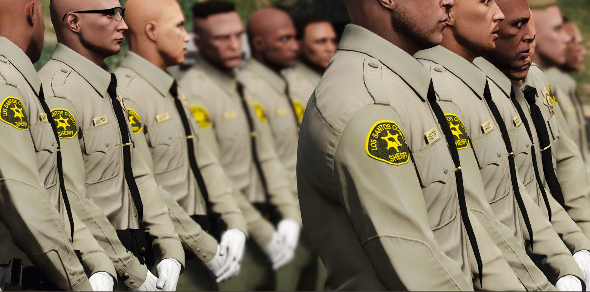Se sei alla ricerca di un lavoro sicuro e nei limiti della legge, le opportunità nella contea non mancano. Lo Sheriff's Department organizza periodicamente delle accademie per nuovi agenti interessati alla lotta contro il crimine. Se sei interessato ad intraprendere questa strada ricca d'azione e scene mozzafiato, visita il forum del governo su gov.svrp.it e partecipa all'accademia.
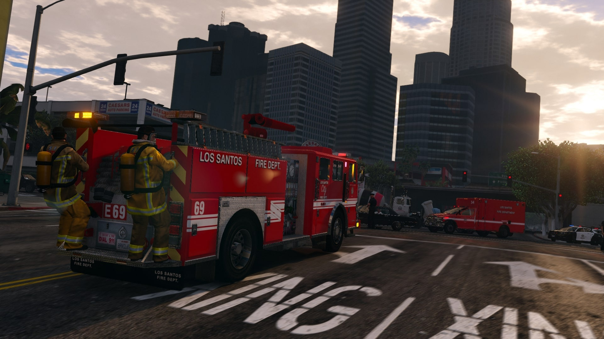
Sempre sulla piattaforma governativa, avrai modo di intraprendere la carriera da vigile del fuoco o da paramedico. In questa interessante ed emozionante fazione avrai modo di intraprendere una carriera appagante, a stretto contatto con persone diverse e vivendo scene di ogni tipo, in un contesto dinamico ed avventuroso.

Infine, potrai diventare la voce della contea e intraprendere la carriera da giornalista nel Weazel News, la testata giornalistica locale. Avrai modo di intervistare personaggi di spicco della comunità, organizzare eventi e raccontare le ultime notizie a tutti i cittadini.
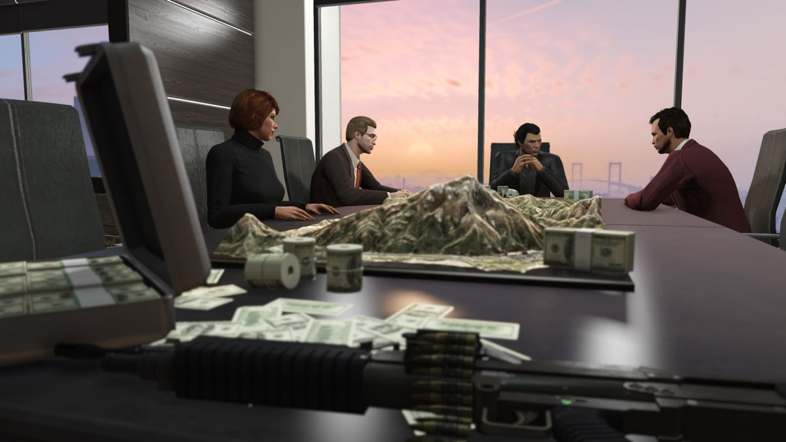
Alcune persone hanno tuttavia un'attitudine ben più imprenditoriale. Se questo è il tuo caso e pensi di avere una bella idea per l'avvio di un'attività nella contea, puoi effettuare richiesta sul forum www.svrp.it e, se accettata, avrai modo di creare un'azienda tutta tua, assumere dipendenti e costruire un impero.
Fazioni Illegali
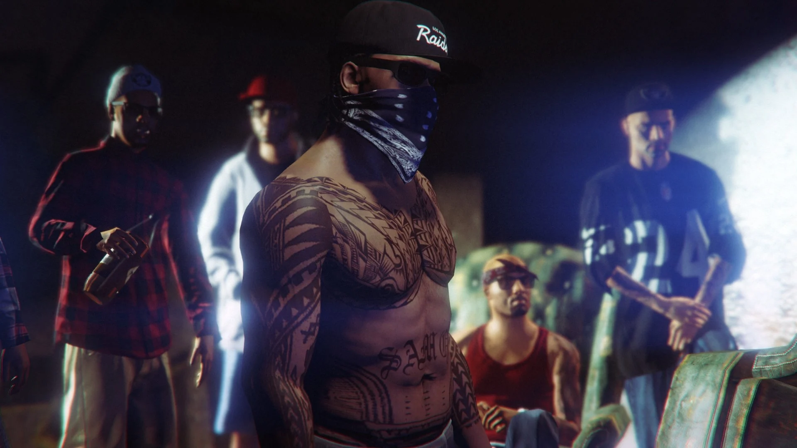Nonostante l'impegno indiscusso delle forze dell'ordine, le strade della contea non sono del tutto sicure. Approfittando infatti della geografia della zona, tra campi sconfinati, zone rurali e anfratti montuosi, la nascita di bande illegali specializzate nel commercio d'armi e di droga, nella distillazione di bevande alcoliche, rapine ed altre attività criminose, è stata inevitabile.
Se pensi di essere la persona adatta alla vita di strada e sei un amante di sparatorie, spaccio di droga, rapine e guerre tra bande, potrai entrare a far parte di una delle numerose gang e bande già presenti sul server.
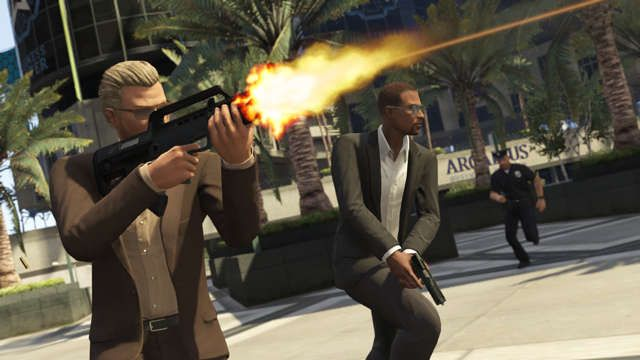
Le bande di strada non sono l'unica alternativa in questo campo, è infatti possibile affiliarsi ad una famiglia mafiosa e partecipare a commerci internazionali di armi, estorsioni e perderti negli intrecci tipici delle organizzazioni mafiose.
Tuttavia, se ritieni di avere la stoffa giusta per avviare una tua attività criminosa, è possibile effettuare richiesta sul forum www.svrp.it e far crescere la tua organizzazione fino a prendere il controllo di uno dei mercati illegali della contea, affermandone il nome e la fama.
Piattaforme esterne
South Valley Roleplay si avvale di diverse piattaforme esterne al server al fine di garantire un servizio completo e d'eccellenza a tutta l'utenza. Molte delle attività si svolgono infatti sul forum o sul User Control Panel (UCP). Sul primo è possibile interagire con la community, partecipando a discussioni stimolanti riguardo le ultime novità del server, sul roleplay e avendo anche l'opportunità di proporre cambiamenti e migliorie al server di gioco.Su quest'ultimo è inoltre possibile effettuare richieste per aprire aziende oppure organizzazioni illegali, compilando l'apposito modulo sul forum. E' inoltre presente un forum interamente dedicato alle fazioni legali, suddiviso in sezioni dedicate al governo, allo Sheriff's Department, al Fire Department e al Weazel News. Su quest'ultimo, è possibile prendere parte ad accademie per entrare a far parte di una di queste fazioni, effettuare denunce e richiedere licenze o autorizzazioni.
Un'altra importante piattaforma è l'UCP, accessibile su ucp.svrp.it, che mette a disposizione numerose funzionalità per la gestione del proprio personaggio, della propria fazione, consultare la mappa dei punti d'interesse e partecipare ad aste per ottenere veicoli e case esclusive.
Al fine di vivere a pieno la community e restare sempre al passo con le ultime novità, ti suggeriamo caldamente di visitare al più presto queste piattaforme.